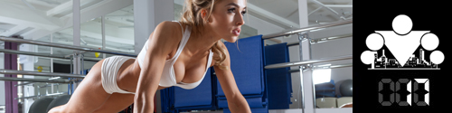

The internet is overflowing with contradictory information about protein intake norms needed by people who want to gain muscle mass. Sometimes they specify 2–3, or even all of 5 g of protein per 1 kg of weight a day. Do you really need that much protein to build muscle mass, or is it all the machinations of sports-nutrition manufacturers? In parallel we'll answer whether catabolism is as scary as it's painted, and whether there is a protein–carb window that, if you miss it, means your muscles will never grow.
The math of protein
Let's count together, and for that we'll go in several stages.
1. We know that the cells of our body constantly renew. So, proteins in the muscles fully renew as a whole in 180 days. It turns out that after 180 days our muscles will consist entirely of new proteins.
2. The amount of muscle in the body of an average man (not doing sport) is around 35–40% of his total body mass [4]; in athletes this figure can reach 50–60%, and in extreme cases (bodybuilders, for example) go past 70% [1]. There are currently many different methods that let you determine muscle mass in the body quite accurately.
3. Muscles, on average, consist of 20% protein and 80% water and everything else. So in 100 g of muscle there will be about 20 g of protein, but even that amount is quite large.
4. Taking all the facts above into account, we move directly to the calculations.
Example:
- Total weight — 100 kg
- Muscle % — 50%
- Muscle renewal rate — 180 days
Muscle weight (Total weight * Muscle %) = 50 kg
Amount of muscle that renews in 1 day (Muscle weight / Muscle renewal rate) ~280 grams
Protein need (Amount of muscle that renews in 1 day * % of protein in muscle) = 56 grams
- Muscle % — 50%
- Muscle renewal rate — 180 days
Muscle weight (Total weight * Muscle %) = 50 kg
Amount of muscle that renews in 1 day (Muscle weight / Muscle renewal rate) ~280 grams
Protein need (Amount of muscle that renews in 1 day * % of protein in muscle) = 56 grams
So a person weighing 100 kg with a 50% share of muscle in the body needs 56 grams of protein a day to maintain (!) normal functioning of the current amount of muscle.
There are four important points that should be said here.
1. We're talking about maintaining normal functioning of the existing muscle volume, that is, ordinary vital activity. If a person starts training actively, their protein needs will rise, because the body will need to build new muscle.
2. The calculations above take into account the protein need only for muscles, although, as you already know, proteins are needed by all tissues in the body without exception as building material. The daily protein norm according to various organizations is 0.8–1.5 grams per 1 kg of weight.
3. Remember that the body uses for synthesis only 1/3 of the protein received from food; another 2/3 it takes by rebuilding protein structures already in the body. So the real need of the muscles for protein from food is even smaller. [3]
4. If your goal is to gain muscle mass, you need to calculate the needed protein intake corresponding to the DESIRED weight, not the current one.
The protein–carb window
Everyone who has ever tried to study the basics of proper nutrition has run into the widespread opinion that after an intense workout a so-called protein–carb window opens. Popular fitness magazines, books, internet portals, and bloggers promote the same theory, which says: "In the next 20–30 minutes after training you need to eat food rich in protein and carbs. In this period a so-called post-workout / anabolic / protein–carb window is open in the body. For this reason nutrition after training is needed mainly to recover the muscles and activate their growth, because practically all nutrients go into anabolic processes."
In reality everything happens a bit differently, and if you look at this question from a scientific point of view, it becomes clear that this is no more than facts torn out of context, and they contradict human physiology.
After training, recovery processes do indeed start in the body. We distinguish immediate (early period) and delayed recovery (late period).
Immediate recovery is the process of eliminating metabolic products that accumulated in the tissues during the exercises (metabolites) and clearing the oxygen debt that formed. It happens right after the end of each exercise and continues for 30–90 minutes after the training work.
Delayed recovery is the return to the original level of the body's energy resources, and an increase in the synthesis of structural proteins and enzymes. It extends over many hours of rest after work.
During delayed recovery, glycogen stores accumulate in the muscles and liver; these recovery processes happen over 12–48 h. What is the source of glycogen synthesis? First of all, lactic acid that entered the blood. It goes into the liver cells, where glucose is synthesized first, and glucose is the direct building material for glycogen synthase, which catalyzes glycogen synthesis.
If glycogen spend in the muscles was very high and it needs to be synthesized in large amounts, the glycogen content in the liver at the beginning of rest can even drop a bit because of the increased supply of glucose to the muscles. For glycogen resynthesis in the muscles, internal substrate funds alone are not enough; an additional amount of carbs from food is needed.
In simple words — after training the body will definitely need carbs for recovery, but not in the next 30–60 minutes, but over 12–48 hours. So you don't need to worry much if you didn't manage to eat right after the workout. And if you can't eat right after the workout, that's no big deal. Because what matters most for the body is the total amount of carbs consumed per day!
After resynthesis of the body's energy stores, the processes of resynthesis of phospholipids and proteins increase significantly, especially after heavy strength work that is accompanied by significant breakdown of them. Recovery of the level of structural and enzyme proteins happens over 12–72 h.
There's also no acute need to consume a large amount of protein right after training, and you don't need to fear catabolic processes and muscle breakdown. The main job is to keep an accurate count of the total amount of nutrients entering with food through the day. That is, you need to know exactly how many proteins, fats, and carbs you consume a day. Because until the body restores glycogen stores, protein synthesis won't start.
That's how the situation looks from the point of view of physiology, so stop believing popular fitness magazines, books, diet forums, and would-be coaches repeating the same myth. Read biochemistry and physiology textbooks, and trust only scientific facts!
Sources
1. Boris Tsatsulin. How much protein do muscles "eat"?
2. Normal physiology. Part 2, ed. A.I. Kubarko, Minsk, 2014
3. Chernov N.N. Metabolism of substances and energy (Metabolism). 2014.
4. Protein Requirements and Recommendations for Older People: A Review. Caryl Nowson, Stella O'Connell, 2015.
5. Berezov T.T., Korovkin B.F. Biological chemistry: Textbook. — 3rd ed., revised and expanded. — Moscow: Medicine, 1998. — 704 p.: ill. — (Textbook for medical-university students). ISBN 5-225-02709-1